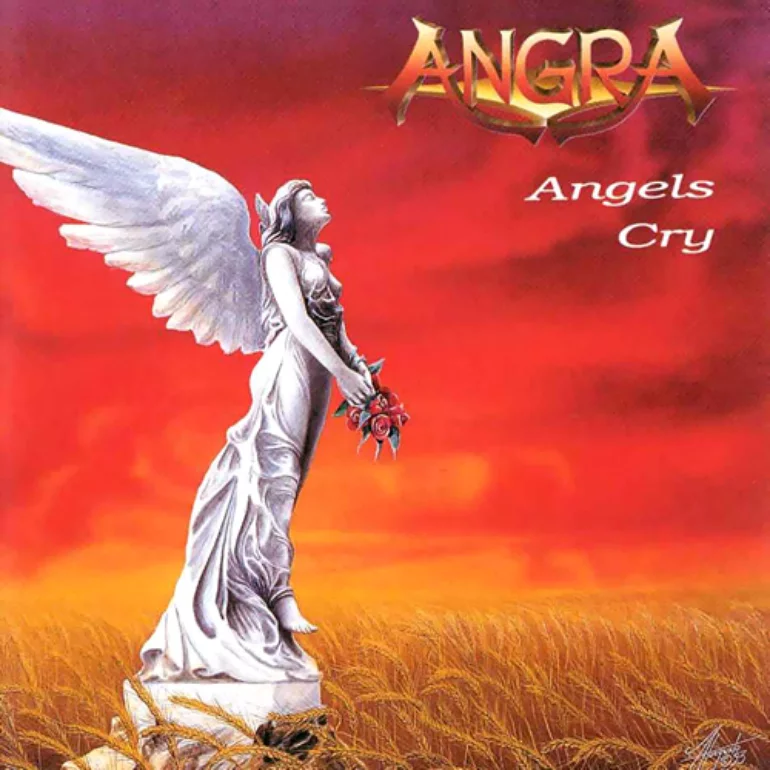
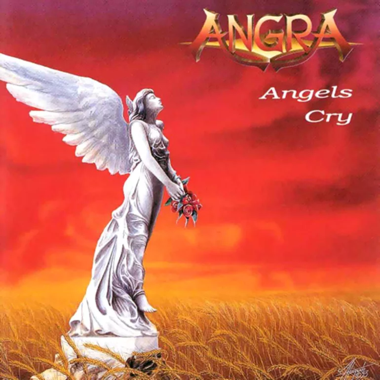

Angra (Banda)
Angra é uma banda brasileira de power metal, formada na cidade de São Paulo em 1991, pelo vocalista, tecladista e multi-instrumentista Andre Matos e os guitarristas Rafael Bittencourt e André Linhares, após se conhecerem na Faculdade Santa Marcelina, onde cursavam composição e regência.
Andre Matos havia feito parte do Viper (entre 1985 e 1990) e Rafael Bittencourt fazia parte da banda Spitfire. Após a formação inicial da banda, entraram os músicos Luis Mariutti (baixo) e Marco Antunes (bateria), e André Linhares cedeu lugar a André Hernandes, e posteriormente a Kiko Loureiro. O guitarrista Rafael Bittencourt foi o único integrante a tocar em todos os álbuns da banda.
História
O início e Angels Cry (1991-1994)
A banda Angra foi formada por Rafael Bittencourt e Andre Matos com a proposta de fundir a agressividade do heavy metal, os ritmos étnicos brasileiros e a sofisticação da música erudita. O nome significa "deusa do fogo e da beleza" na mitologia tupiniquim, além de significar uma pequena enseada ou baía usada como porto natural (como em Angra dos Reis). Além disso, também foi escolhido por se parecer com o adjetivo angry, que, em inglês, significa "raivoso".
Na época, Andre Matos foi quem trouxe os contatos com o empresário Antônio Pirani, então proprietário da revista Rock Brigade e do selo Rock Brigade Records, por volta de 1991 no auge do estilo power metal. Rafael, que estava retornando dos Estados Unidos, resolveu montar uma super banda com músicos conhecidos na Faculdade Santa Marcelina como o vocalista Andre Matos. Os músicos André Linhares (guitarra), Luis Mariutti (baixo), e Marco Antunes (bateria) completaram a banda, mas após algum tempo André Linhares deixou a banda e André Hernandes o substituiu. Pouco depois, Kiko Loureiro assumiu o lugar de André Hernandes. A ideia era aproveitar a onda do power metal (ou metal melódico como o gênero ficou conhecido no Brasil) que estava bastante popular na Europa, Japão e no Brasil graças a nomes como Helloween e Gamma Ray.
O quinteto ensaiou praticamente por um ano para lançar sua primeira demo tape, intitulada Reaching Horizons em 1992. Ainda desconhecidos do grande público, o Angra assinou com a JVC e viajou para a Alemanha para gravar seu primeiro álbum de estúdio. Antes das gravações iniciarem, Marco Antunes deixa o grupo, ficando a cargo de Alex Holzwarth tocar a bateria no disco.
O primeiro show da banda foi dia 17 de Abril de 1993 no Black Jack em São Paulo. O tecladista foi Fábio Ribeiro, que fez alguns shows e depois saiu para trabalhar na Korg. Entrou então Leck Filho.
No fim de 1993 foi lançado o disco de estreia, Angels Cry, que contava com a participação de Kai Hansen, Dirk Schlachter, Thomas Nack (Gamma Ray) e Sascha Paeth (Heavens Gate). O álbum apresentava uma mistura de heavy metal e música clássica, sonoridade que marcou o estilo da banda.[5] Após o lançamento a banda ganhou fama no Japão, onde Angels Cry chegou à terceira posição na parada internacional, tendo vendido 106 mil cópias, ganhando seu primeiro Disco de Ouro.[6] Leitores de revistas japonesas e sul-americanas elegeram o Angra "Melhor Banda Nova" de 1993, sendo que, na Rock Brigade, o grupo (e Angels Cry) venceu diversas categorias da votação dos leitores: "Melhor Álbum", "Melhor Vocalista", "Melhor Capa", "Melhor Tecladista" e "Melhor Música" (Carry On). O videoclipe de "Time" foi executado muitas vezes em emissoras de TV do Brasil e do Japão, enquanto que o de "Carry On" foi indicado para o MTV Video Music Awards.
O sucesso continuou no verão de 1994, quando Angels Cry foi lançado na Europa, pela Dream Circle/Polydor (Europa) e pela CNR Music/Arcade (França). No mesmo ano, André Matos participou da remixagem de três músicas – Evil Warning, Carry On e Angels Cry – para inclusão num EP chamado Evil Warning, lançado somente no Japão, com uma edição limitada de 13 mil cópias que vinha com uma camiseta. Nesse meio tempo, a banda levou a cabo uma extensa turnê, já apresentando o novo baterista Ricardo Confessori, substituto de Marco Antunes.
Ainda em 1994 a banda foi convidada para a inauguração da versão brasileira do festival Monsters of Rock, dividindo palco com o KISS, Black Sabbath e Slayer, tocando para mais de 50 mil pessoas presentes além da cobertura televisiva ao vivo. Com as imagens desse show é feito o clipe da música Carry On.
Após o festival, a banda embarcou numa turnê no Brasil: a Angels Cry Tour, que incluiu um show patrocinado pela 97FM, que levou 10 mil pessoas ao Maracanã, e duas apresentações lotadas no Aeroanta, em março. O fim da turnê ocorreu em 13 de maio de 1995, quando a banda foi à Europa para uma série de shows, que compreendiam 11 datas em cinco países, incluindo dois festivais ao ar livre. O tecladista em toda a turnê foi Leck Filho.
No período entre o término dos shows e o início das gravações do segundo álbum, o guitarrista Kiko Loureiro e o baixista Luís Mariutti foram chamados a criar vídeo-aulas para as séries Guitar Rock e Rock Bass, respectivamente.
 
